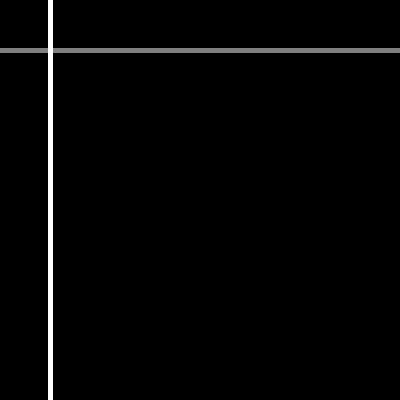
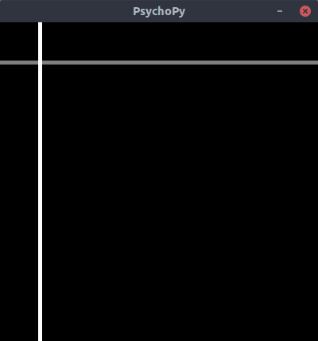

PsychopyでOpenCV画像をImageStimで表示する
 y軸反転と画素値をfloat（0-1）に変換すればOK。
npimg: np.ndarray # (height, width, num_channels)
stimimg = np.flip(npimg.astype(np.float32) / 255, axis=0)
ウインドウに表示させるサンプル
import numpy as np # numpy>=1.20.1
import cv2 # type: ignore # opencv-python>=4.5.1.48
from psychopy import core # type: ignore # psychopy>=2020.2.10
from psychopy.visual import Window, ImageStim # type: ignore
import sys
# npimg: np.ndarray = cv2.imread('image.png', 1)
npimg: np.ndarray = np.zeros((400, 400, 3), dtype=np.uint8)
npimg = cv2.line(npimg, (0, 50), (400, 50), (127, 127, 127), 3)
npimg = cv2.line(npimg, (50, 0), (50, 400), (255, 255, 255), 3)
# cv2.imwrite('image.png', npimg)
stimimg = np.flip(npimg.astype(np.float32) / 255, axis=0)
window = Window((400, 400), color='black', units='pix')
stim = ImageStim(window, pos=(0, 0), size=(400, 400))
stim.image = stimimg
stim.draw()
window.flip()
core.wait(3)